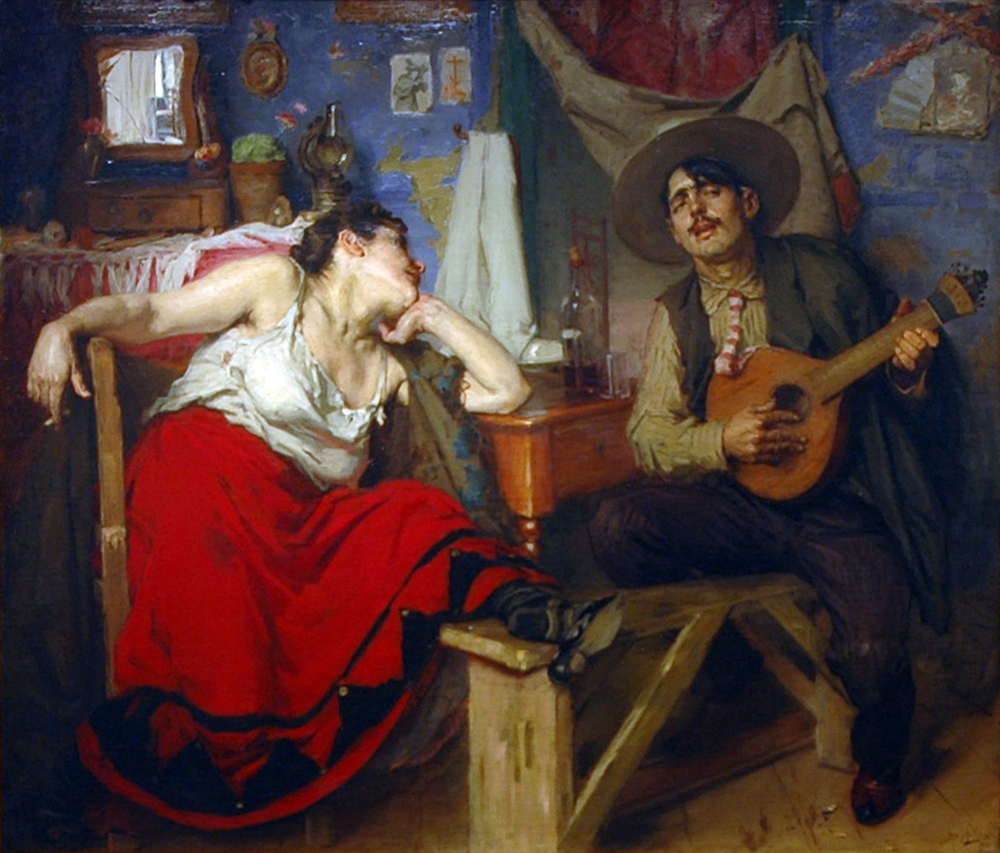
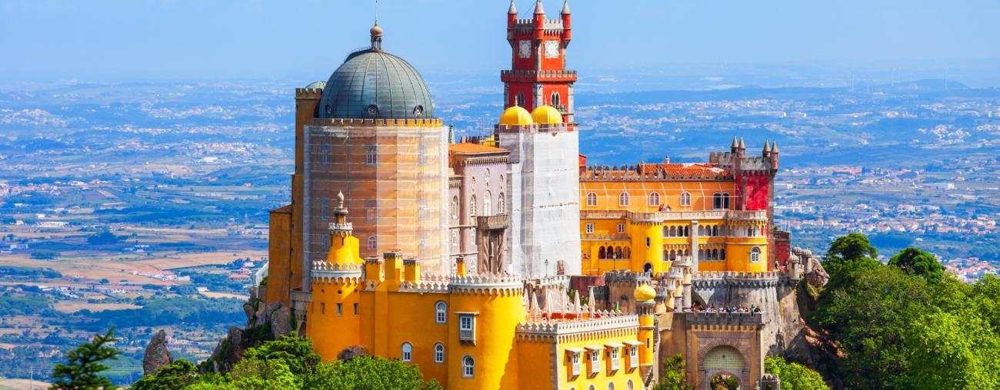
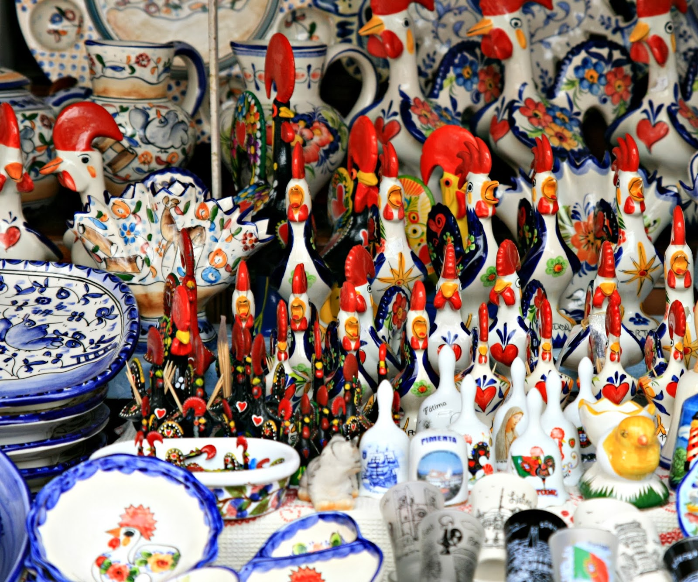
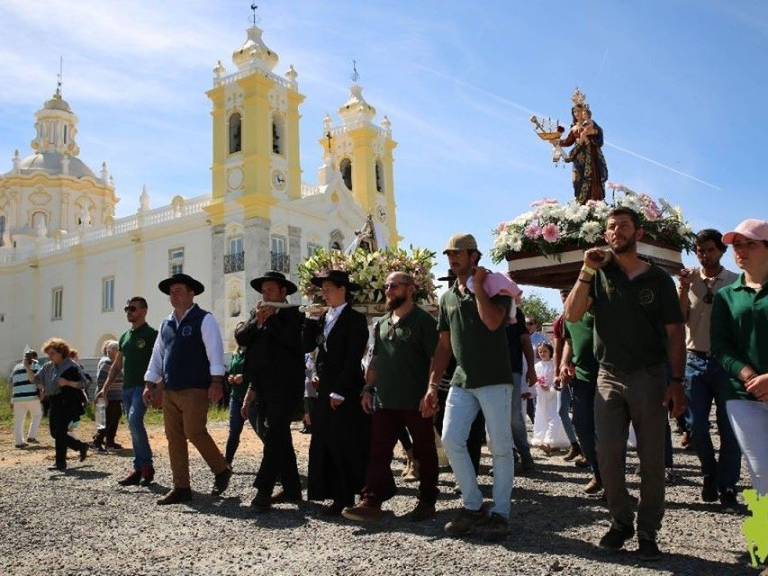
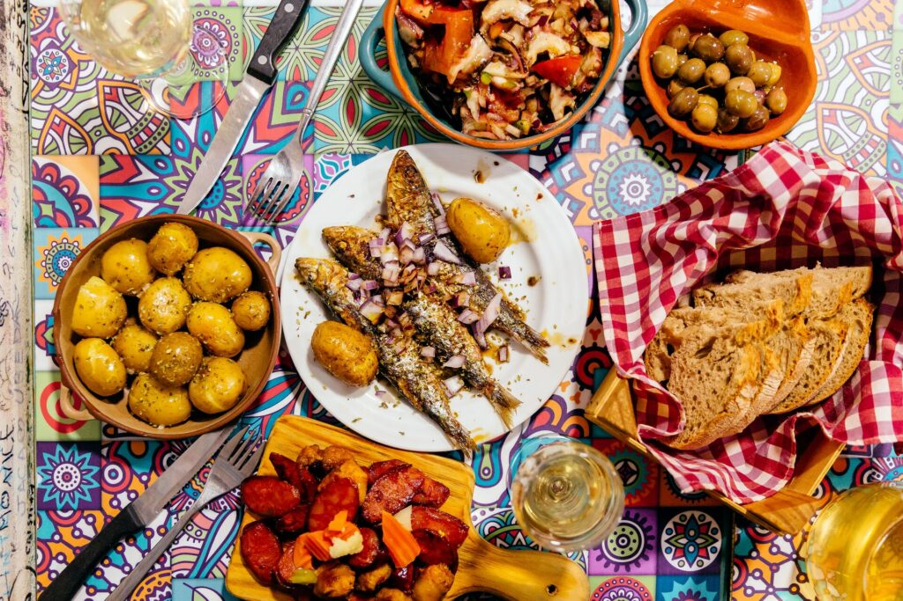

The Sound of Fado
Let the melancholic tunes of Fado music wash over you in the intimate, dimly lit taverns of Lisbon and Coimbra.

UNESCO Towns
Wander through the historic centers of Évora, Sintra, and Porto, where every building is a protected piece of history.

Traditional Crafts
Watch artisans weave intricate Arraiolos rugs, shape Barcelos pottery, and craft delicate filigree jewelry.

Literary History
Visit the Bertrand Bookstore, the oldest operating bookstore in the world, and explore the haunts of poet Fernando Pessoa.

Festivals and Folklore
Join local "romarias" (pilgrimages) where colorful costumes, traditional dances, and ancient music bring rural history to life.

Gastronomic Heritage
Understand the culture through its food, from the iconic pastel de nata to the historical significance of salted cod (Bacalhau).